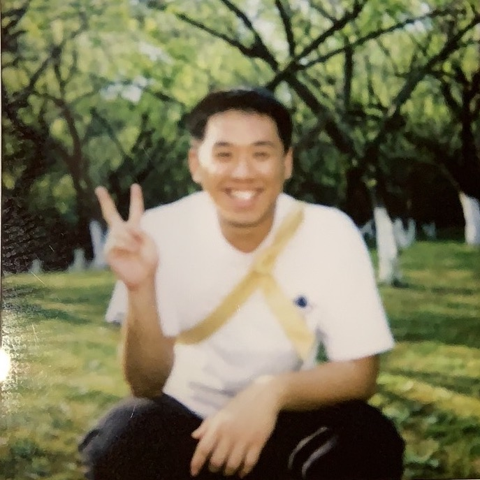

Yunhao Fang 方云浩
|  | Research Scientist Intern, |
I am seeking a Ph.D. position for fall 2025 or a full-time employment opportunity. Please feel free to contact me!
I am currently working on large language model and vision language model for decision making agents. Email me if you are interested in collaboration!
About me
I got my Master degree in the Department of Computer Science and Engineering at the University of California San Diego, and I am fortunate to be advised by Prof. Hao Su.
Prior to starting as a Master student, I received my B.Eng. in Electronic Engineering from Zhejiang University. I have also spent time at Shanghai AI Laboratory, as the maintainer of the opensource codebase mmtracking.
My long-term research goal is to build a automatic learning system with generalizable perception and beyond-human level decision making capabilities.
Research interests
My research interests include
Perception
Senergy of Vision Language Models
Generalizable Representation for Multimodal Signals
Reasoning and Common Sense
Concept Emergence and Common Sense
Reasoning over Common Sense and Formal Systems (Verification)
Embodied AI
General Sequence Modeling
Efficient Learning from (Human or AI) Feedback
Artificial General Intelligence
General Decision Making
Creative Agents
Publications & Preprints
Papers sorted by years. Representative papers are highlighted.
2023
 |
Unleashing the Creative Mind: Language Model as Hierarchical Policy For Improved Exploration on Challenging Problem Solving |
 |
Deductive Verification of Chain-of-Thought Reasoning |
Distilling Large Vision-Language Model with Out-of-Distribution Generalizability |
Awards
China National Scholarship, 2022